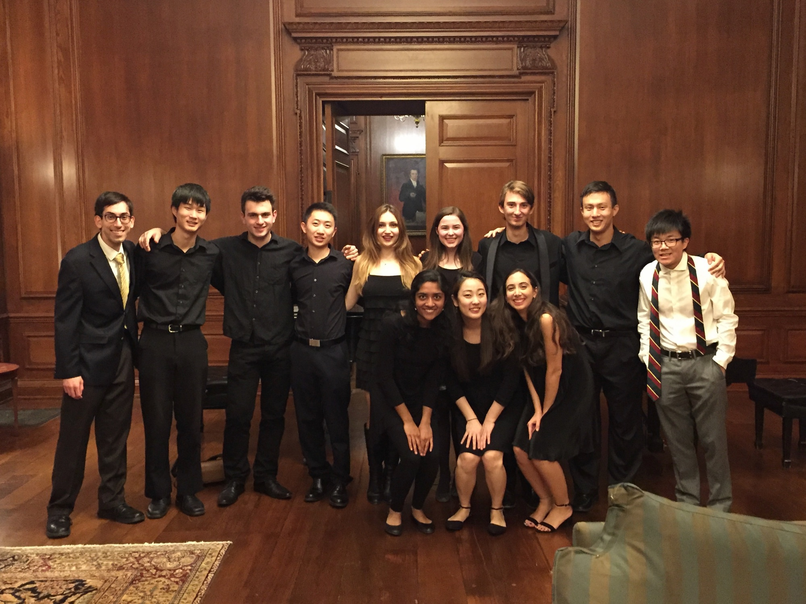

Why join
Yale's first and only student organization dedicated to the piano.
When you become a member of YUPC, you can
- be a part of studio classes, where pianists play for each other in an informal, relaxed setting, receive feedback from peers, and eat food;
- participate in masterclasses taught by professional concert pianists;
- perform in collaborative piano concerts; and
- make great piano-playing friends!

Application process
Applications are currently closed. Information about our Fall 2026 recruitment cycle will come out around August 2026.
YUPC strives to be an inclusive organization, and all undergraduate pianists at Yale are invited to apply. However, since we engage with challenging repertoire and have a limited amount of time to prepare for performances, we do want to make sure that each member has a substantial background in piano performance.
For new member auditions, each applicant is asked to bring two contrasting pieces that are approximately 10 minutes in total duration and demonstrate musical and technical ability. The program is up to you, though we recommend that at least one piece be part of the standard piano repertoire. Memorization is not required (but it certainly won't hurt if you do it well!). You can initiate your application by filling out the application form. The form must be submitted by TBA.
Please note that any applicant who has cleared the audition process for a credit-bearing performance course (e.g., lessons for credit or chamber music) is exempt from the audition requirement. We do not require that you enroll in the course—just that you receive admission. You still must fill out the application form.
Questions? Email yaleugradpianocollective@gmail.com.
Membership requirements
What we ask of members
Upon acceptance, new members are expected to begin participating in a meaningful way in the organization. Each member is required to do at least the following every year:
- Perform in one public concert
- Perform in one studio class
- Attend a studio class in which one is not performing
It is also expected that members will treat each other respectfully and be receptive to musical ideas different from their own. This open-minded outlook is especially crucial for studio classes and collaborative performances. The success of YUPC depends on its welcoming, friendly, and lively culture.